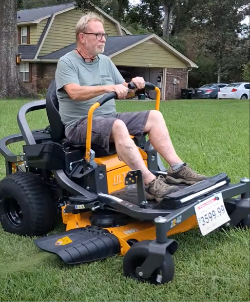
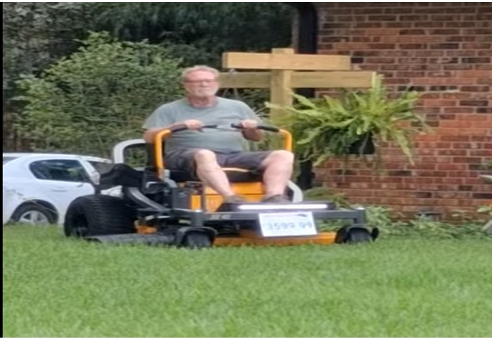
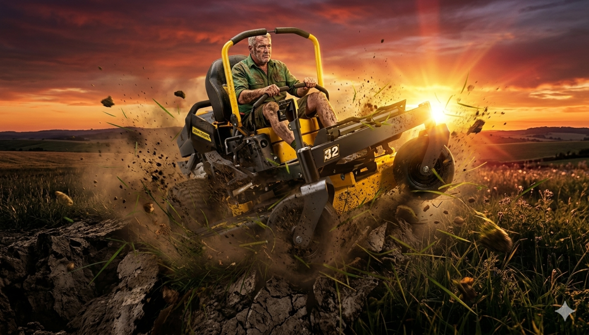
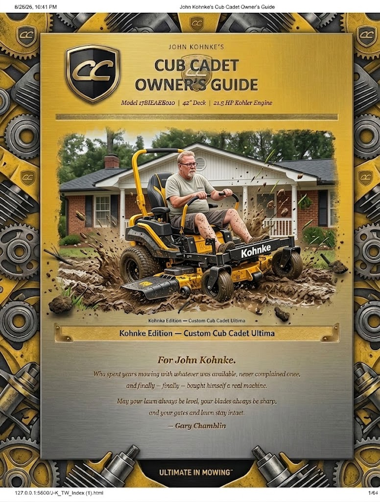
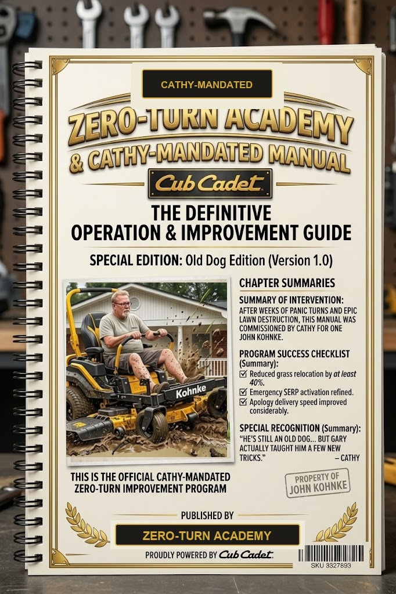
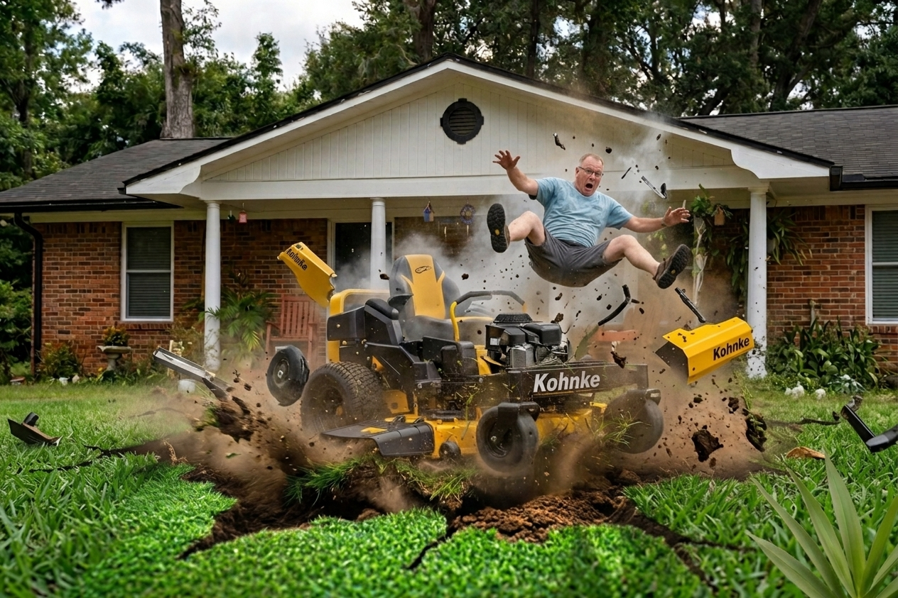
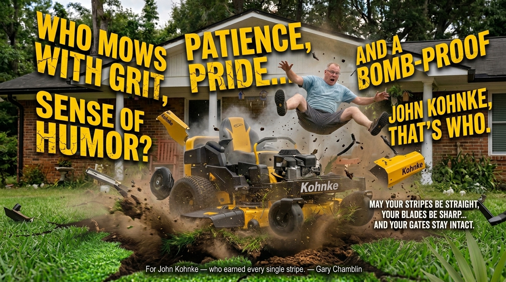
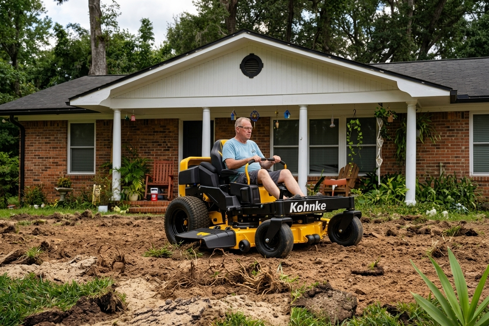
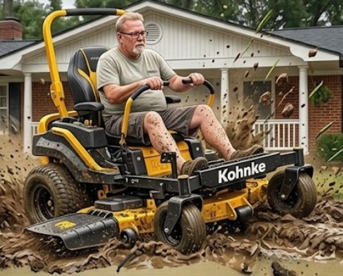
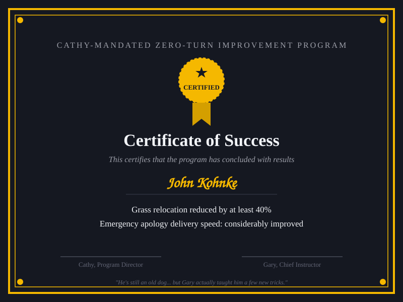

Official Cathy-mandated zero-turn program commissioned for John Kohnke after epic lawn turns. This command hub integrates maintenance tracking, yard calculators, and operational field notes.
| Engine Type | Kohler 21.5 HP — air-cooled, single-cylinder |
| Drive System | Sealed hydrostatic |
| Oil Spec | SAE 10W-30 (5 hr break-in, then every 50 hrs) |
| Spark Plug | KM-BR4ES |
| Tire Pressures | Rear: 10–12 PSI | Front: 14 PSI |
| Battery | 12V Lawn Tractor Battery |
| Purchase Price | $3,599.99 |

John Kohnke takes his brand-new Cub Cadet zero-turn for its first lap — price tag still swinging.
| Interval | Task | John's Tip |
|---|---|---|
| Every Mow | Check oil level | Takes 10 seconds. Do it. |
| Every Mow | Blow off engine & deck | Grass on the hydro fan = overheating. |
| Every Mow | Inspect blades visually | Look for bends, chips, or dullness. |
| Every Mow | Check tire pressure | Uneven pressure = uneven cut. |
| Every 25 Hrs | Grease all fittings | Front axle, steering sector, spindles. |
| Every 25 Hrs | Inspect deck belt | Look for glazing, cracking, fraying. |
| Every 25 Hrs | Clean deck underside | Scrape off grass buildup to prevent rust. |
| Every 50 Hrs | Change oil + filter | SAE 10W-30, drain when warm. |
| Every 50 Hrs | Sharpen/replace blades | Dull blades tear grass, invite disease. |
| Every 50 Hrs | Replace air filter | Hold to light — can't see through it? Replace it. |
| Seasonal | Replace fuel filter | Cheap insurance against fuel system issues. |
| Seasonal | Replace spark plug | KM-BR4ES — easy swap, big difference. |
| Seasonal | Full hardware inspection | Tighten everything you can reach. |
| Seasonal | Battery check | Load-test before storing for off-season. |
The first 5 hours set the tone for the engine's entire life. Follow this protocol exactly.
| Done | Phase | Required Action |
|---|---|---|
| Before Start | Check oil (SAE 10W-30), verify fresh fuel, set rear tires (10-12 PSI), tighten all loose bolts. | |
| First 15 Mins | Run at half throttle for initial 15 minutes. Avoid full-load heavy mowing. | |
| Hours 1–5 | Mow lightly. Inspect for oil or fuel leaks after every pass. | |
| At 5 Hours (MANDATORY) | Change engine oil immediately to flush metal wear particles. Re-torque deck bolts, inspect belt tension, grease zerks. |
| Done | Interval | Maintenance Item | Action Required |
|---|---|---|---|
| Every Mow | Oil Dipstick Check | Pull dipstick, wipe, reinsert. Takes 10 seconds. | |
| Every Mow | Debris Blowout | Use leaf blower on engine & deck. Grass on hydro fans causes catastrophic overheating. | |
| Every Mow | Blade & Pressure Check | Inspect for blade bends/dullness. Rears: 10–12 PSI, Fronts: 14 PSI. | |
| Every 25 Hrs | Chassis Lubrication | Grease front axle pivot, steering sector gear, and spindle zerks with multi-purpose grease. | |
| Every 25 Hrs | Belt & Deck Scraping | Inspect deck belt for glazing/cracking. Scrape grass buildup from deck underside to stop rust. | |
| Every 50 Hrs | Oil & Filter Service | SAE 10W-30. Drain warm. Replace filter every other oil change minimum. | |
| Every 50 Hrs | Blade Sharpening & Air Filter | Sharpen blades. Replace paper filter element if opaque when held to light. | |
| Every Season | Fuel Filter & Spark Plug | Replace inline fuel filter ($5) and KM-BR4ES spark plug ($4) for fast starting. | |
| Every Season | Hardware Inspection & Battery | Tighten all deck & frame bolts. Load-test battery before storing for off-season. |
Cleaning & Care Rules
- • Blow Off Post-Mow: Use leaf blower or compressed air. Never pressure wash spindles (destroys grease seals).
- • Hydro Fan Maintenance: Keep clear in FL heat. Scrape deck underside while clippings are fresh.
- • Fuel Care: Use fresh unleaded every 30 days. Add Sta-Bil fuel stabilizer if sitting >30 days.
- • Storage & UV Protection: Store covered in shed/tarp. Wipe vinyl seat with UV protectant against FL sun.
Hard-Won Operating Rules
- • Sharp Blades & Dry Grass: Sharpen every 50 hrs. Never mow wet grass (causes clumping and deep ruts).
- • The 1/3 Rule: Never cut off more than 1/3 of grass blade height in one pass to avoid stressing turf.
- • Alternate Patterns: Change mowing directions weekly to prevent severe soil compaction and ruts.
- • Vibration Warning: Excessive shaking = bent blade or loose spindle. Shut off immediately!
| Month | Frequency | Cut Height | Fertilize? | Seasonal Notes |
|---|---|---|---|---|
| Jan – Feb | Every 3–4 wks | 3.5–4" | No | Dormant season. Mow only if needed. |
| March | Every 2–3 wks | 3.5–4" | No | Grass waking up. Watch for spring weeds. |
| April | Weekly | 3.5–4" | Yes (Slow-rel) | First fertilizer application of the year. |
| May – Jun | Weekly | 3.5–4" | Yes (June) | Peak growth season. Mow consistently. |
| July – Aug | Weekly | 4" | No | Heat stress. Raise deck to 4". Mow at 7 AM. |
| September | Weekly | 3.5–4" | Yes (Light) | Still growing. Final fertilizer window. |
| October | Every 2 wks | 3.5" | No | Growth slowing down. Reduce frequency. |
| Nov – Dec | Every 3–4 wks | 3.5" | No | Near-dormant. Minimal mowing needed. |
| Incident | Lesson Learned |
|---|---|
| The Stale Fuel Incident | Left fuel all winter without stabilizer. Cleaned carb for 3 hours in Feb. Always use Sta-Bil. |
| Pressure Washer Mistake | Blasted spindles to get clean. Destroyed two sealed bearings ($180 fix). Use air only! |
| Skipped 5-Hour Oil Change | "Seemed fine" so oil wasn't changed. Accelerated engine wear. Flush break-in oil! |
| The Wet Grass Decision | Mowed after a rainstorm. Clogged deck solid and left deep ruts. Wait for dry grass! |
- • Cutting Rules: Maintain height at 3.5–4 inches (never below 3"). Never cut off >1/3 height. Raise deck to 4" in July/Aug heat to shade root system.
- • Watering & Feeding: 1 inch/week early morning (before 10 AM). Fertilize April, June, and Sept only. Never fertilize Oct–March.
- • Pests & Fungus: Watch for Chinch bugs in dry brown patches. Brown patch fungus comes from evening watering — keep watering to mornings!
Cub Cadet started in 1961 built alongside International Harvester farm equipment. They were overbuilt by people who made machines to plow fields, not just clip grass. That farmer DNA remains today: heavy steel, simple drivetrains, and repairable components.
So when you fire up that Kohler engine, you’re continuing an American tradition that started long before either of us argued with gates. You're working with a machine built to show up, cut right, and survive.
— Gary Chamblin
Step 1: Start mower. Step 2: Tear up lawn like escaping police. Step 3: Cathy arrives. Step 4: Regret.
"Precision is optional; survivability is mandatory. We don't teach straight lines — we teach: ‘I didn't hit the garden, Cathy, I expanded the lawn.’"
Cause: Operator enthusiasm | Damage: Lawn integrity compromised | Witness: Cathy | Status: Husband in danger
"John can manage wildland fires and statewide disaster coordination… but he still can’t coordinate a clean turn in front of the house."
The Mower’s Remorse
But the moment he turns, a turf chunk drops.
Now he’s staring at ruts where the lawn used to grow,
Praying Cathy believes it’s a high-tech aero-mow.
The Kohler Engine Ballad
Map out evacuations and direct heavy fleet mechanics,
But the second that 21.5 HP Kohler roars to life in the yard,
He steers into the birdbath and blames it on the guard.
Cathy steps onto the porch, coffee mug in hand:
"John, you just turned our front yard into Normandy Beach sand."
Puns to Keep You in the Good Graces
- • Shear Panic: The exact emotion when you hear her car turn down the driveway.
- • Blade of Glory: What you aimed for before you created a crop circle in the St. Augustine.
- • Grounds for Divorce: What happens when "zero-turn" becomes "zero-lawn."
- • De-turf Defense: "I didn't destroy the grass, Cathy—I just gave it a high-speed haircut."
The Operator Quirks
- • The "Cathy Check": Looking at the driveway every 45 seconds instead of looking at the grass in front of you.
- • The Tactical Teardrop: Doing a 15-foot wide arc to make a simple 90-degree turn just so the rear tires don't leave a burn mark.
- • Post-Mow Crime Scene Cleanup: Sweeping the runaway dirt back into the ruts with your boots before the garage door opens.
Florida Heat & Domestic Intelligence
John claims morning mowing "prevents heat stress on the St. Augustine." Cathy knows the truth: it’s the only time slot where she’s too tired to come outside and stop him from drifting around the AC unit.
Pushing fresh grass clippings over the bare dirt patches with a leaf blower like a dog trying to cover up a hole in the carpet before anyone notices.
Every Cub Cadet, including John's, traces back to a Louisville, Kentucky factory floor in 1960. Here's the timeline from "why does IH make a tiny tractor" to the zero-turn sitting in the garage today.
For fun/reference only — not John's model. These are the IH-era (1961–1981) tractors collectors chase hardest, split into rare "holy grails" and tough daily-use workhorses.
| Model | Years | Engine / Drive | Why Collectors Want It |
|---|---|---|---|
| Original (Model 100) | 1961–1963 | 7-hp Kohler | The tractor that started it all — early round-fender units are the holy grail. |
| 149 | 1971–1974 | 14-hp Kohler K321 / Hydro | Widely considered IH's best all-around Cub Cadet — hydraulic deck lift, wide frame. |
| 169 | 1974 | 16-hp Kohler K341 | Only ~4,000 made in a 5-month run — highest-hp single-cylinder IH ever built. |
| 800 | 1974–1980 | 8-hp / Gear-drive | Lowest-production regular IH model (~2,000 made) — sold poorly, now rare. |
| 1650 Quietline | 1974–1980 | 16-hp Kohler K341 / Hydro | Top-of-the-line Quietline — rubber-isolated engine mounts, quieter running. |
| "Spirit of '76" | 1976 | Bicentennial Special | Rare commemorative paint scheme — a big premium item for collectors. |
| 782 | 1979–1981 | 17-hp Kohler KT17 Twin / Hydro | First to wear the iconic red-and-black IH color scheme. |
| 982 | 1979–1981 | 19-hp Onan B48G Twin / Hydro | The original "Super Garden Tractor" — power steering, true 3-point hitch. |









This dynamic portal is a custom-built reference system developed exclusively for John Kohnke. This project was fully coded, designed, and built independently by Gary Chamblin, with the profound hope that you eventually figure out how to drive a zero-turn without tearing up local infrastructure in mind. Cub Cadet is not affiliated with, endorsing, or responsible for this application.
- The Lap Bar Panic: This system is easier to navigate than dual steering levers. It will not cause you to accidentally reverse at 7 MPH into your own chain-link fence because you panicked.
- The Involuntary Donut: We accept zero liability for users trapped in a continuous, high-speed spin cycle in the center of the yard because they forgot how physics works.
- The Etch-A-Sketch Lawn: This portal ensures clean data, but it cannot fix a lawn that looks like a drunken maze. We guarantee accurate part numbers, not straight lines.
- The Sunday Crack-of-Dawn Patrol: Not responsible for flying coffee mugs from neighbors when you fire up a twin-cylinder engine at dawn just to show off your pivot turns.
- The Maintenance Blindspot: This database won't force you to check the oil. If you spend 45 minutes yanking a starter rope on a fouled spark plug, that is between you and your pride.
- The Tailgate Launch: We assume you understand the mathematical necessity of ramps. We are exempt from damages if you try to "gun it" over a trailer tailgate and high-center your brand-new cutting deck.
- The Drainage Ditch Extrication Act: This application contains zero coding to salvage your dignity when you misjudge a slope and slide gracefully backward into a muddy retention ditch, requiring a tactical rescue mission from the neighbor you actively ignore.